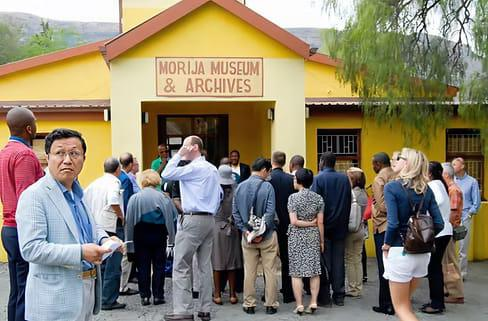

The Morija Cultural Festival began as a celebration of Lesotho’s heritage and has grown into a major tourism attraction. It highlights the traditions, music, and artistic expressions of the Basotho people. Over the years, it has become a platform for preserving cultural identity and promoting creativity. The festival also contributes to economic growth through tourism.
The event is significant because it brings together communities, artists, and visitors in one place. It celebrates unity, diversity, and cultural pride in Lesotho. Many tourists attend to learn about Basotho customs and traditions. It continues to play an important role in promoting Lesotho internationally.
The festival attracts both local and international tourists who are interested in cultural experiences. It is ideal for students, researchers, and travelers who enjoy heritage tourism. Families and groups also attend to enjoy the vibrant atmosphere and entertainment. The festival is designed to appeal to a wide audience.
Adventure seekers and cultural enthusiasts find the festival especially exciting. It offers unique experiences such as traditional dances and local cuisine. Tourists looking for authentic African experiences will find this event unforgettable. It is a perfect destination for cultural exploration.
